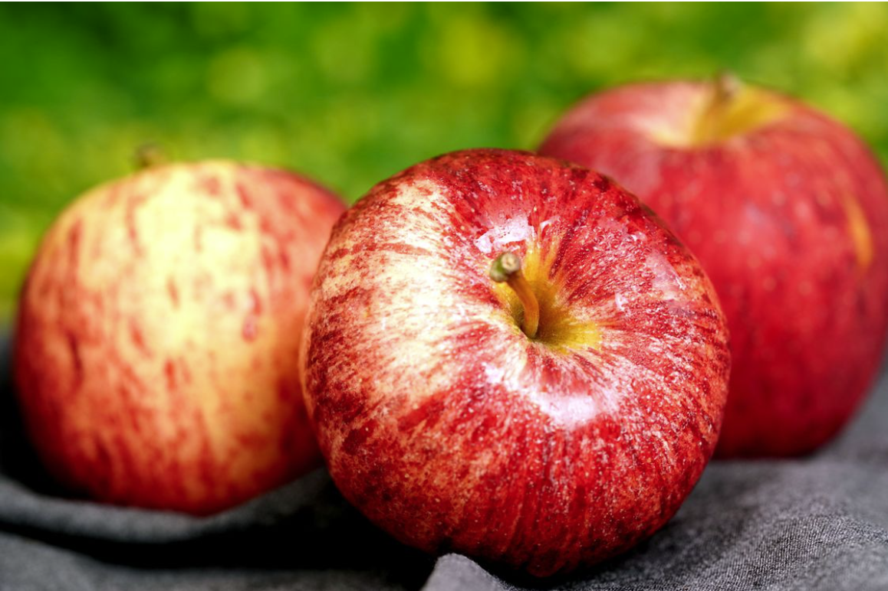
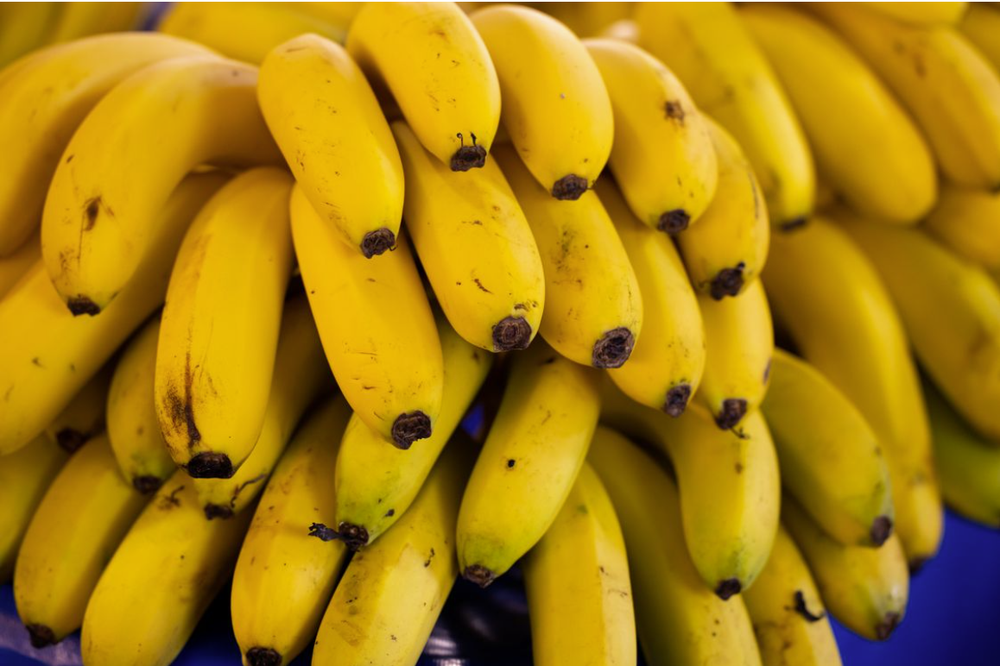

🍉 상큼한 과일 소개🍋🟩
겁나게 비싼 과일의 특징과 장점을 알아보자
🍎🍏사과

아삭하고 달콤한 사과
- 식감이 아삭
- 간식으로 먹기 좋다
- 주스나 샐러드에도 활용 가능
- 비싸다
🍌🍌바나나🐵

부드럽고 든든한 바나나
- 껍질이 있다
- 아침에 식사 대용이지만 혈당 스파이크
- 우유와 함께 갈아 마시기 좋으나 이것도 혈당 스파이크
- 탄수화물과 당이 매우 풍부하다
과일 용어 정리
- 과육
- 과일에서 먹을 수 있는 부드러운 부분
- 껍질
- 과일의 겉부분을 감싸고 있는 부분
- 씨
- 과일 안에 들어 있는 단단한 알갱이